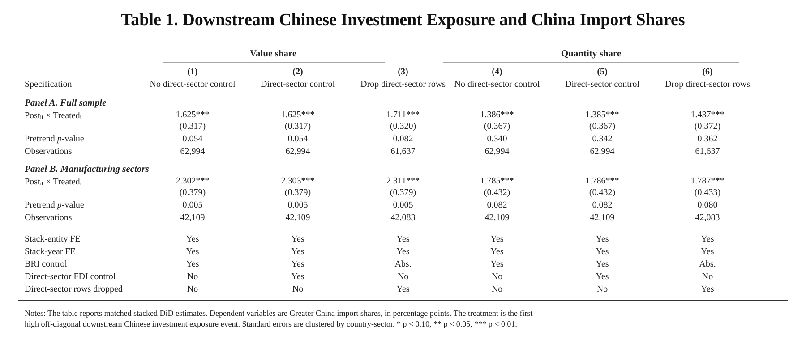
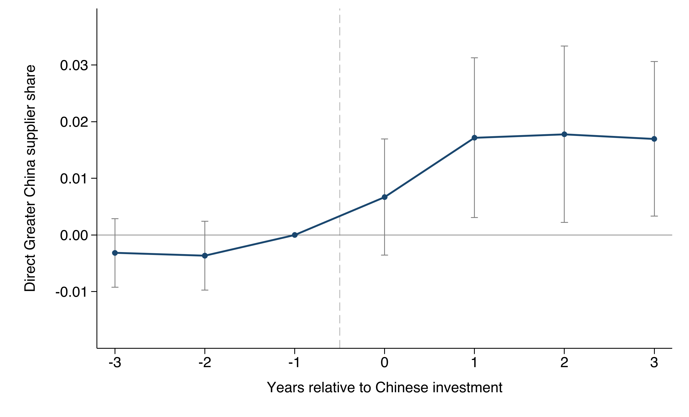
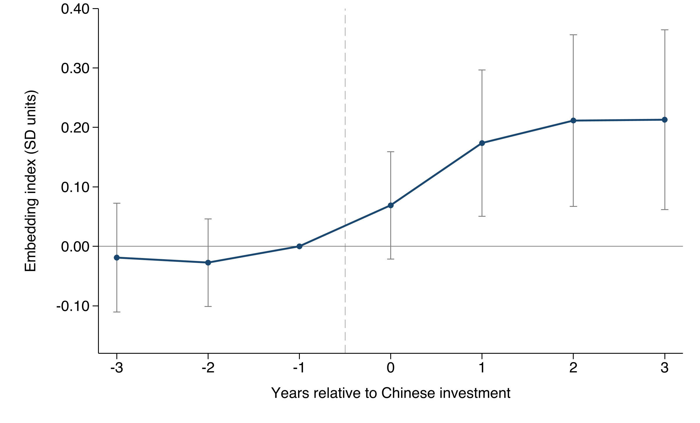
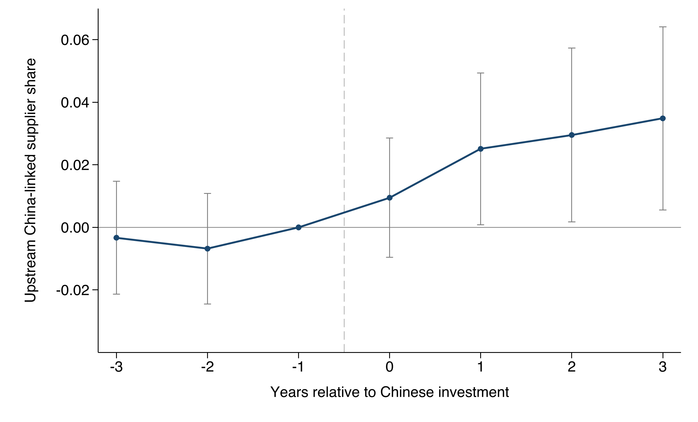
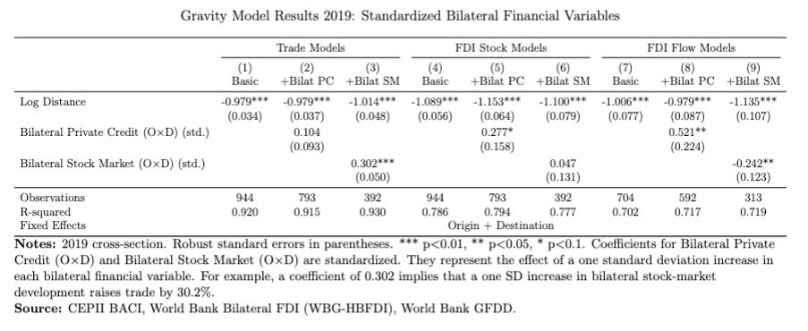
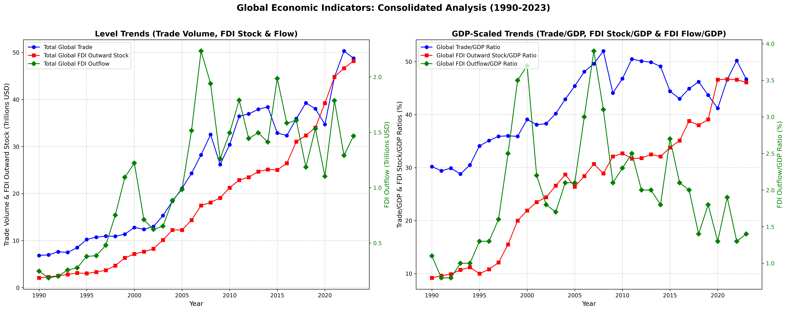
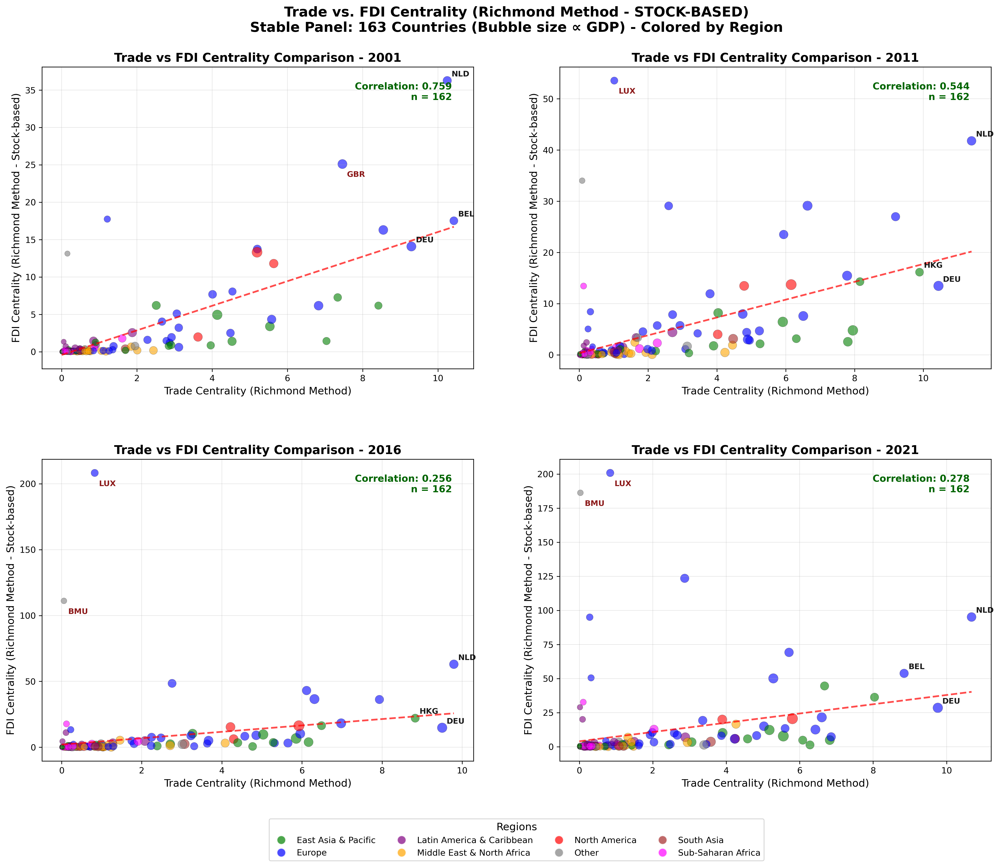
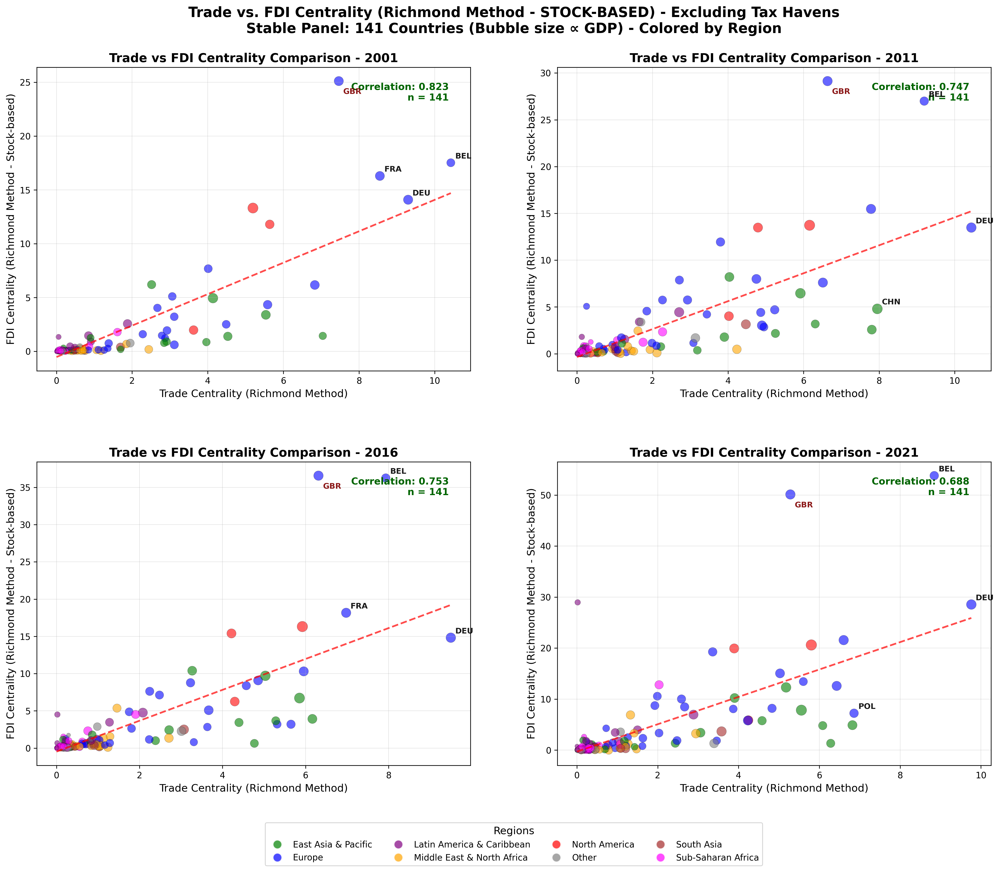

Mike Cheng
PhD Candidate in Economics
Georgetown University
I am a fourth year Economics PhD candidate with research interests in international trade and industrial organization. My research focuses on the intersection of FDI, market power, and supply chain structure. I welcome coauthorship opportunities.
Education
Georgetown University
PhD Candidate in Economics
University of Chicago, Harris School of Public Policy
Master of Arts in Public Policy
Certificate of Research Methods and Certificate of Financial Policy
Recipient of Harris Merit Scholarship
June 2021
Carnegie Mellon University
Bachelor of Arts in Behavioral Economics, Policy and Organization
Minor in International Relations and Politics and Economics
Graduated with University Honor
Member of Omicron Delta Epsilon Honor Society
May 2019
Job Market Paper
Going Overseas: FDI Decisions and Supply Chain Integration
Chinese outward FDI is followed by measurable reorientation of host-country supply networks toward Greater China.
Abstract
Can outward FDI draw host economies into the investing country's supply network? This paper studies Chinese investment abroad and treats FDI not only as a movement of capital, but also as a potential channel through which sourcing relationships are reorganized. I link Chinese investment events to sector-level trade flows and firm-level production networks. At the sector level, I compare host-country supplier industries before and after Chinese investment enters their downstream customer industries, excluding same-sector Chinese investment from the exposure measure. Upstream sectors exposed to downstream Chinese investment in this way increase the quantity share of imports sourced from Greater China by 1.44 percentage points, with no evidence of differential pretrends. At the firm level, I distinguish direct supplier connections from broader network embedding. Investment recipients become more directly connected to Greater China suppliers. Beyond this direct channel, even after excluding recipients' own Greater China suppliers, their surrounding supplier neighborhoods become more China-linked: a standardized measure of indirect China-linked supplier exposure rises by 0.17-0.21 control-pre-period standard deviations during the first three post-investment years. Comparable exposure to non-Greater-China foreign suppliers does not increase significantly. The evidence indicates that Chinese outward FDI is followed by a measurable reorientation of host-country supply networks toward China. Outward investment can therefore operate as a channel of supply-chain integration, extending China-linked sourcing beyond the boundaries of the investing affiliate itself and creating a potential source of demand for home-country upstream suppliers.
Key Findings

Reduced-form estimates: downstream Chinese investment exposure and China import shares

Direct Greater China supplier share around Chinese investment

Indirect China embedding index around Chinese investment

Upstream China-linked supplier share around Chinese investment
Publication
Chapter 6: Foreign Direct Investment, Trade Finance and Global Value Chain Integration
Abstract
This chapter reconceptualizes the financial architecture of Global Value Chains (GVCs), arguing that Foreign Direct Investment (FDI) provides the structural foundation while Trade and Supply Chain Finance (TF/SCF) ensures operational fluidity. Using a gravity framework, we first show that trade and FDI have distinct financial underpinnings: trade is more sensitive to bilateral stock market development, while FDI responds more to private credit depth. Next, we apply network analysis to distinguish productive investment from "phantom FDI," revealing a resilient "real economy" network where trade and FDI centrality remain highly correlated once tax havens are excluded. Finally, our econometric analysis provides evidence of "GVC assimilation," showing that FDI fosters convergence in the use of capital inputs between source and host countries—a key channel for capital-embodied technology transfer—but not in intermediate inputs. We conclude that deep GVC integration requires a dual policy strategy that supports both long-term investment and the short-term financing that allows local firms to connect and upgrade within these global production networks.
Key Findings

Gravity Model Results 2019: Standardized Bilateral Financial Variables

Global Economic Indicators: Consolidated Analysis (1990-2023)

Trade vs. FDI Centrality (Richmond Method - Stock-Based) - Stable Panel: 163 Countries

Trade vs. FDI Centrality (Richmond Method - Stock-Based) - Excluding Tax Havens: 141 Countries
Working Papers
Exporting Automation, Not Just Goods: Evidence from China's Industrial Robot Exports
Abstract
This paper provides the first systematic analysis of who imports China's industrial robots, why they do so, and how competitive these robots are in global markets. Using bilateral trade data from 2005-2022, we document a structural transformation in China's position in global robotics trade: China has shifted from a net importer to a net exporter of industrial robots. Its exports are disproportionately directed toward emerging manufacturing hubs, particularly in Southeast Asia. Although Chinese robots are generally less technologically advanced than those produced by Japan, Germany, the United States, and South Korea, they offer the strongest "bang for the buck." These "good-enough" robots are especially attractive to price-sensitive, lower-income economies that are becoming new manufacturing platforms amid global supply-chain reconfiguration. Consistent with this mechanism, we document a U-shaped relationship between robot imports and GDP per capita: high-income economies adopt frontier robots to offset high labor costs, whereas low-income economies rely on cost-effective Chinese robots to compensate for weaker labor quality rather than high wages. Finally, using a fully specified general equilibrium framework, we conduct counterfactual policy simulations to evaluate how geopolitical and industrial policy shocks affect China's robot exports, relative wages, and global welfare. Our findings suggest that China is increasingly exporting production capability—not just products. More broadly, contrary to the view that automation substitutes for offshoring, our results show that cost-effective robots can travel with production as manufacturing relocates to lower-wage economies.
Project
From Autoregression to Trade Insight: A Scalable Forecasting Framework for Bilateral Flows
Competition Context: This project was developed for the AI for Trade Challenge, a data science competition focused on predicting bilateral trade flows. The challenge tasks participants with forecasting monthly trade values at a highly disaggregated product level, providing valuable insights for trade policy and economic analysis.
Abstract
This paper introduces a forecasting framework developed for the AI for Trade Challenge, targeting monthly bilateral trade flows at a high level of product granularity. We construct a model that predicts October 2025 trade values between the United States, China, and their top trading partners at the HS4-product level using a combination of machine learning and time-series baselines. The model incorporates over twenty macroeconomic, financial, and commodity indicators as exogenous drivers. Using LightGBM with a Tweedie loss function, the model handles the zero-inflated, heavytailed nature of trade data. Internal cross-validation indicates promising performance, with sMAPE of 43.22% and a total predicted trade volume of $156.4 billion. We discuss the model's construction, performance, and broader implications for forecasting disaggregated trade flows.
Curriculum Vitae
You can download my CV here.
Contact
Email: zc156@georgetown.edu
Address: Department of Economics
Georgetown University
Washington, DC